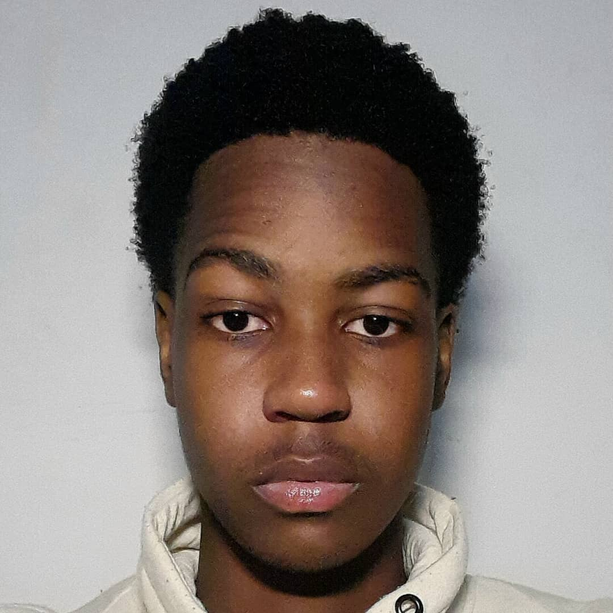

I am a 19-year-old first-year Computer Systems Engineering student with a strong interest in technology and how computer systems work. I enjoy learning about programming, software development, and problem-solving through technology. As I begin my journey in engineering, I am focused on building my skills in coding, system design, and modern technologies while exploring different areas of the tech industry.
I am currently studying Computer Systems Engineering and building my knowledge in programming, computer systems, and modern technologies. I enjoy understanding how technology works behind the scenes and learning how software and hardware interact to create powerful systems. Beyond academics, I have a strong interest in basketball and gaming. Basketball has helped me develop teamwork, discipline, and competitiveness, while gaming has strengthened my problem-solving skills and strategic thinking. These interests influence my approach to learning and motivate me to continue developing my skills in technology and engineering.
Bachelor of Computer Systems Engineering First Year Student 2025 – Present
Email: ronapeloewetse@gmail.com Location: Gaborone, Botswana GitHub: github.com/ronapeloewetse